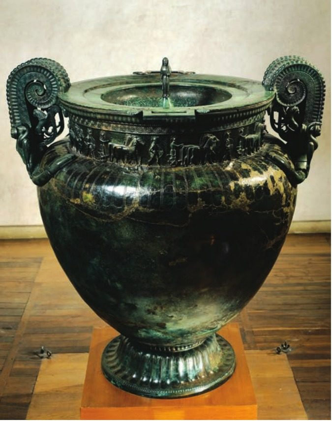
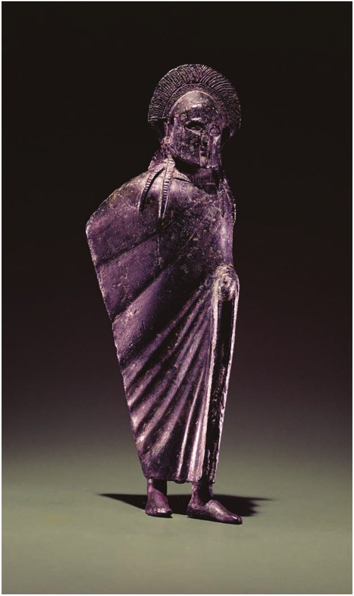
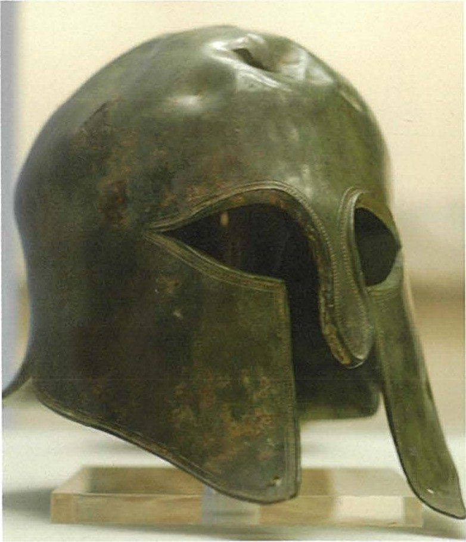
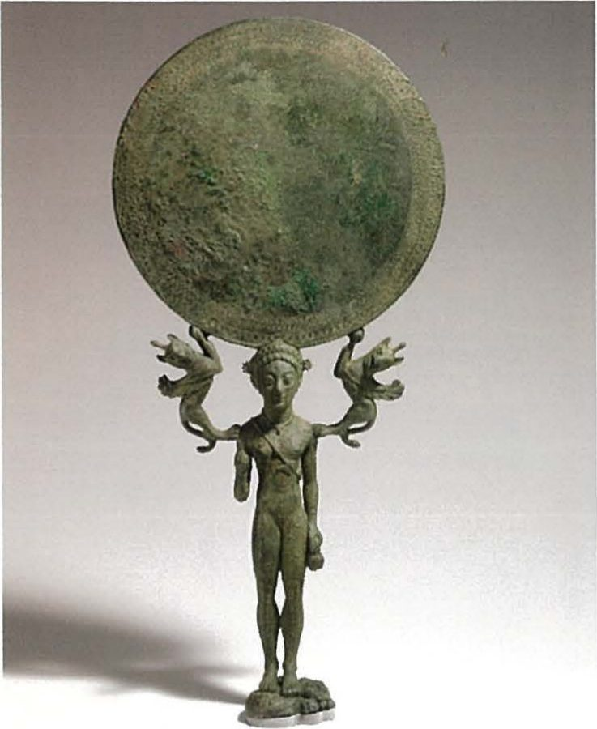
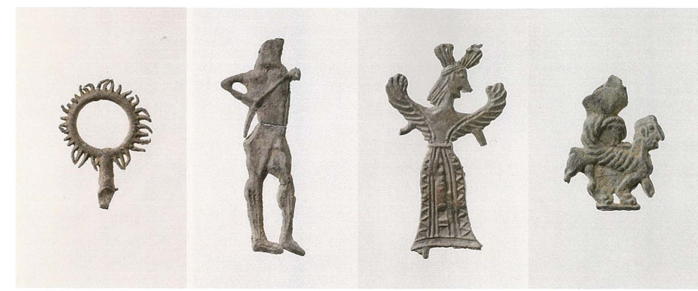
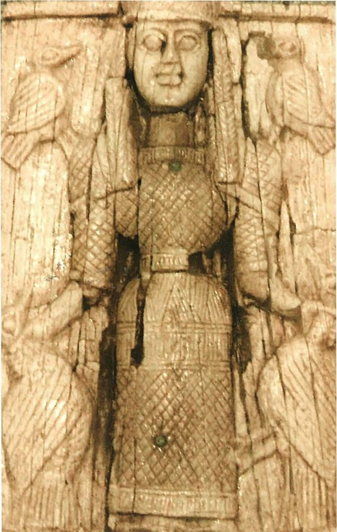
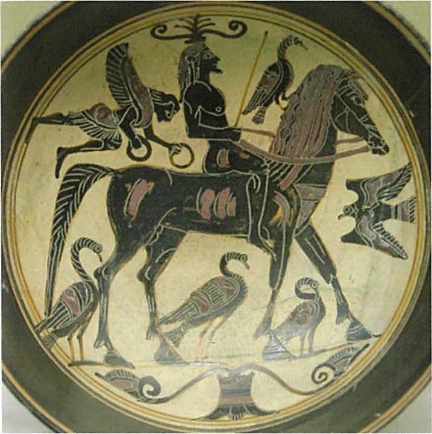
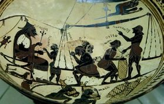
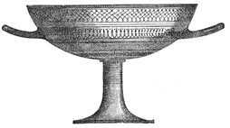

Spartan society to the Battle of Leuctra 371 BC · Lesson 16
The economy II: technology
Bronze shields, a giant mixing bowl, thousands of lead figurines and finely painted cups: what could the craftsmen of Laconia make — and what do their objects say about a city famous for austerity?
Year 12 Ancient History · Section II, Option G · Present with → or space · Read on a phone with R

Spaced review · 4 minutes · from memory, no notes
Five questions
- 1How many lots does Plutarch say Lycurgus made for the Spartiates?Lesson 15
- 2According to Aristotle, how much of the land was owned by women?Lesson 15
- 3What did the victor Arexippus set up for Orthia?Lesson 10
- 4Where was the bronze figure of a girl made, and where was she probably found?Lesson 13
- 5Predict: bronze is an alloy. Which two metals make it?Today’s first idea
- 9,000 (he also reports a version with 6,000, and 3,000 more added by Polydorus) — Cooley D57
- Almost two-fifths — Politics 2.9, Cooley D54
- His prize sickles: the stone has cuttings for five — Cooley C86
- Made in Laconia, 520–500 BC; probably found at Prizren in Kosovo — Cooley D64
- Copper and tin
Learning intentions and success criteria · 2 minutes
Today’s goals
- explain what surviving objects reveal about Spartan technology
- read an object as a source
- describe three technologies with an object as evidence for each
- explain what the Arkesilas cup reveals about skill and trade
- explain why we cannot be sure who made these objects
- write a 5-mark answer on technology in 9 minutes
Bronze is copper mixed with a little tin — not iron. Laconian black-figure pottery has black figures painted on a pale cream slip — not on red clay.
Note-making · today’s routine
How to structure your notes
questions and key terms
short phrases, arrows (→ led to), abbreviations (Br. = bronze, Lac. = Laconian)
- 1Listen and look firstDon’t copy while the slide is being explained.
- 2Write your own notes at each ✎ checkpointPhrases, not sentences. Arrows for cause and effect.
- 3Compare with the model notesThey appear one row at a time. Add what you missed in a second colour.
- 4Copy each cue question into the left columnLater, cover your notes and answer the cue questions from memory.
- 5Finish with a three-sentence summaryFive checkpoints: bronze, metals and methods · arms and armour · bronze vessels · lead and ivory · clay, the Arkesilas cup and who made it.
Key vocabulary
Words you will use today
| Metal | Meaning |
|---|---|
| alloy | a metal made by mixing metals; bronze is copper with a little tin |
| cast | shaped by pouring molten metal into a mould |
| hammered | beaten into shape from a sheet of metal |
| facing | the thin bronze skin over a shield’s wooden core |
| krater | a large bowl for mixing wine with water |
| votive | an offering given to a god, usually left at a sanctuary |
| perioikoi | the free inhabitants of the towns of Laconia and Messenia, without citizen rights at Sparta (Lesson 7) |
| Clay | Meaning |
|---|---|
| black-figure | figures painted in black, with details scratched in; Laconian painters worked on a pale cream slip |
| slip | a thin coat of fine liquid clay brushed over a pot before it is painted |
| kylix | a shallow, two-handled drinking cup on a foot |
| hydria · lakaina | a water jar · a deep drinking cup typical of Laconia |
| kothon | a Laconian earthenware cup that Critias (quoted by Plutarch) says soldiers prized |
| symposium | a drinking party, where kraters and cups were used |
| silphium | a prized plant from Cyrene in Libya, used as medicine and seasoning |
The rest of Chapter 11’s word list: kleros, medimnos, redistribution, dowry, heiress and intensive survey (Lesson 15); obelos, an iron spit (Lesson 18). Spelling: Cooley’s translations use Greek forms (Lakonia, Lykourgos, Arkesilas of Kyrene). In your own writing use Laconia, Lycurgus, Arcesilas of Cyrene; the cup keeps its usual name, the Arkesilas cup.
1 · Bronze: metals and methods · I do — what bronze is made of
Bronze: where the metal came from
Boia also has a harbour and was important for its mineral resources: traces of iron workings are common there, and the more general area has deposits of lead and copper which may well have been tapped in antiquity.
W. G. Cavanagh, ‘Introduction to Lakonian Archaeology’, in M. G. L. Cooley (ed.), Sparta (2023). Boia was a perioikic town in south-eastern Laconia.
Possibly local: Cavanagh’s “may well have been” is a hedge, not a proven mine.
Had to be imported. Every bronze helmet and shield depended on long-distance trade.
What is bronze?
An alloy: copper mixed with a little tin, about one part in ten. One of your textbooks wrongly adds iron.
Who probably worked these deposits?
Cooley: Laconia’s iron and lead deposits “were presumably exploited by the perioikoi”. Boia was one of their towns.
Even a city famous for keeping to itself needed trade to arm its soldiers.
1 · Bronze: metals and methods · I do — two steps, two methods
How bronze objects were made
- 1CopperPossibly from deposits near Boia.
- 2TinImported, from outside Laconia.
- 3The alloyMelted together: bronze.
- 4CastPoured into a mould: small, solid figures.
- 5HammeredBeaten from sheet: helmets and shield facings.
1 · Bronze: metals and methods · We do — read the method from the object
Cast or hammered?


Which was cast, and which hammered? How can you tell?
The small, solid figure was cast in a mould. The helmet is a thin, curved shell, beaten into shape from a sheet of bronze.
What skill does each need?
Casting needs a model and a mould, and metal hot enough to pour. Hammering needs long, careful beating so that the thin sheet does not crack.
The textbooks give neither object a find-spot. Use them for the method, not as proof of where they were made.
Notes checkpoint 1 of 5
Bronze: metals and methods
Write your own notes first. Then compare, row by row, and add what you missed in a second colour.
2 · Arms and armour · We do — Source 11.3: two kinds of evidence
The Spartan bronze shield, in words and in metal
[3] Included in his list of compulsory equipment for the battlefield itself, he specified a red cloak and a bronze shield for every man, on the grounds that the cloak was the least effeminate and most warlike kind of uniform and the shield was quick and easy to polish and very slow to rust.
Xenophon, Constitution of the Lakedaimonians 11.3 · an Athenian admirer of Sparta, probably writing in the late 390s or 380s BC · “he” is Lycurgus · trans. B. Wilson · Cooley D88
The Athenians from [spoils from] the Lakedaimonians at Pylos.
Bronze shield-facing found in a cistern in the agora at Athens · c. 425 BC · IG I³ 522 · trans. in Cooley B13

Why bronze, according to Xenophon?
It was easy to keep bright and very slow to rust.
What happened to some Spartan shields in 425 BC?
At Pylos the Athenians captured them, punched an inscription into at least one and displayed them as spoils.
2 · Arms and armour · I do — modelling OVPRL on two extracts
Words and metal: what each extract can and cannot tell us
| Code | Model margin note |
|---|---|
| O | A: Xen., prob. late 390s/380s BC, admirer of Sparta · B: the shield itself, inscribed by its Athenian captors, c. 425 BC |
| V | A: bronze chosen — polishes easily, “very slow to rust” · B: a real Spartan shield: bronze facing over (lost) wood |
| P | A: praises Lycurgus’ planning · B: Athenian boast — spoils displayed to celebrate a victory |
| R | B dated more precisely: tied to a known event (Pylos, 425 BC) · A: undated rule, credited to Lycurgus |
| L | neither says who made Spartan shields, where, or how many |
- Abbreviations: Xen., prob.
- Both extracts in one table: they test each other
- Specific to these sources
Xenophon says the ephors called up “craftsmen” with the army (Constitution 11.2, Cooley D88), but not who they were. Section 5 comes back to this.
Notes checkpoint 2 of 5
Arms and armour
3 · Bronze vessels · I do — bronze for the gods
Mirrors, bells and a bowl for a king

Euonyma dedicated (this) to Athena
Bronze mirror dedicated by a Spartan woman · trans. in Cooley C14
Euonyma on the acropolis; a woman called Alkido at the perioikic sanctuary of Apollo Hyperteleatas (Hodkinson).
Bronze bells from Athena’s sanctuary: bells “made in the same workshop” turn up at the Menelaion and elsewhere in Laconia and Messenia (Hodkinson).
Hodkinson: the cost of materials, work and inscriptions suggests that those who set up inscribed dedications were “mostly well-off persons with a fair degree of disposable wealth”.
Herodotus (1.70) says the Spartans had a huge bronze mixing bowl made, decorated around the rim, as a gift for King Croesus of Lydia.
3 · Bronze vessels · We do — Source 11.4: the Vix krater
The Vix krater: a high point of bronze-working
Bronze volute krater · late 6th century BC · 1.63 m high, 1.27 m in diameter, 208 kg · found in 1953 in the grave of a Celtic woman at Vix, Burgundy (France) · Musée du Pays Châtillonnais, Châtillon-sur-Seine · made in Laconia or by Laconian-trained craftsmen in southern Italy, perhaps at Taras, a Spartan colony: scholars still debate where.
Bronze working reached a high point with massive vessels intricately decorated like the famous Vix krater.
W. G. Cavanagh, ‘Introduction to Lakonian Archaeology’, in Cooley (ed.), Sparta (2023), on the later Archaic period
What do the handles, the frieze and the lid figure show about the makers?
Great skill at a huge scale: a frieze of warriors and chariots round the neck, a figure on the lid, handles decorated with scrolls and figures. It held about 1,100 litres.
It was found almost 1,900 km from Sparta. Why is that a problem?
It shows where the bowl ended up, not where it was made. If it was made in southern Italy, perhaps at Taras, it is evidence of Laconian-trained craftsmen abroad, not of a workshop in Laconia.
Notes checkpoint 3 of 5
Bronze vessels: mirrors and the Vix krater
4 · Lead and ivory · I do — recall Lesson 10, then add ivory
Lead for the many, ivory for the few

Lead melts at a low temperature, so it could be poured into simple moulds to make thousands of small, cheap offerings for Orthia. Cavanagh: “Little lead figurines, humbler votives, celebrate the participants in festivals”.

Among the early finds (8th–7th centuries BC) at the sanctuaries are “carved ivories” (Cavanagh), such as a 7.5 cm ivory lion of the 7th century from Orthia (Cooley, Fig. 1). There were no elephants in Greece: the raw ivory was imported. Where it was carved, and by whom, we do not know.
Of the early temples, decorated by the mid-7th century with terracotta roof ornaments, and the sanctuary finds, he writes: “Already the Spartans avoid excessive monumentality at home, but the skill and grace of these artefacts serve to undermine the notion of a grim austerity.”
Pausanias says that “the Lakedaimonians made Athena’s temple and her statue both in bronze” (3.17.2, Cooley K3). Architecture: Lesson 25.
Notes checkpoint 4 of 5
Lead and ivory
5 · Clay · I do — Laconian black-figure
Laconian painted pottery

Figures in shiny black on a pale cream slip, details scratched in, with touches of purple-red.
The kylix (drinking cup), the hydria (water jar) and the deep cup called the lakaina.
Cavanagh: vessels for symposia, “some painted with scenes of luxury, others with images of heroes”.
[3] His next move was to expel all forms of useless or superfluous arts and crafts. … [4] … For this reason ordinary domestic equipment and essential goods such as couches, chairs, and tables were superbly made there, while Kritias tells us that the Lakonian earthenware cup, or kothon, gained a very high reputation among soldiers on active service.
Plutarch, Life of Lykourgos 9.3–4 (part) · written c. AD 100 · trans. B. Wilson · Cooley D58. Critias, an Athenian admirer of Sparta, lived c. 460–403 BC.
What does Plutarch admit, even in his picture of an austere Sparta?
That Laconian craftsmen made superb furniture and a famous soldier’s cup: his “useless” arts were gone, but skill remained.
5 · Clay · I do — reading an object, part 1: what is it?
Reading an object: the Arkesilas cup

Laconian black-figure cup (kylix) · attributed to the Arkesilas Painter · c. 565–560 BC · found at Vulci, Etruria (Italy) · Paris, Cabinet des Médailles
… the cup with king Arkesilas of Kyrene in Libya weighing out silphium …
W. G. Cavanagh, ‘Introduction to Lakonian Archaeology’, in Cooley (ed.), Sparta (2023)
What is it, and where was it made?
A drinking cup, painted in a Laconian workshop about 565–560 BC.
Where was it found?
At Vulci, in Etruria in Italy — far from Laconia.
What does the scene show?
King Arcesilas of Cyrene, seated, watches goods being weighed and carried into store. Cavanagh says the goods are silphium; others suggest wool.

5 · Clay · I do — reading an object, part 2: what does it reveal?
What the cup reveals — and what it cannot tell us
A crowded, carefully drawn scene — a seated king, workers and a great balance — painted inside a shallow cup. It shows a painter in control of line and colour.
Found at Vulci in Etruria: Laconian cups travelled across the sea. Cooley also shows a Laconian hydria “found at Vulci in Italy as prized grave-goods” (Fig. 3).
The painter chose a king of Cyrene, a Greek city in Libya, and a scene of weighing and storing goods. That suggests the painter knew of trade far from home.
Who painted it — Laconian painters left “no potters’ or painters’ names” (Hodkinson), and “Arkesilas Painter” is a modern label; who carried it to Italy; what exactly is being weighed; and whether a Spartiate ever drank from such a cup.
So: strong evidence of Laconian skill and of where Laconian goods ended up; only an inference about who made them or how they were traded.
5 · Clay · I do — where Laconian goods ended up
Made in Laconia, found far away
- 1Laconia (Sparta marked)Where most of these objects were made, as far as we know.
- 2Orthia: ivoryCarved ivories found there; the raw ivory was imported.
- 3Vulci, EtruriaThe Arkesilas cup; a Laconian hydria too.
- 4TarasA Spartan colony: one possible workshop for the Vix krater.
- 5Vix, BurgundyThe Vix krater, in a Celtic grave; made in Laconia or in southern Italy, perhaps at Taras.
- 6DodonaA bronze banqueter, “thought to” have been found there.
- 7Prizren, KosovoThe bronze girl, “probably” found there.
- 8AthensA Spartan shield-facing, taken as spoils; where it was made is unknown.
- 9Cyrene, LibyaNot a find-spot: the king on the cup ruled here.
5 · Clay · We do · 8 minutes · object gallery · press K for the timer
Object gallery: material, date, technology
Pairs: for each object note its material, its date and what it shows about technology. Photos: Bradley Figs 3.9, 3.26; Clarke & Garner Figs 6.5, 4.5, 7.6; Hurley et al. Source 45a (full captions earlier in this lesson and on the credits slide).
| # | Material · method | Date | What it shows about technology |
|---|---|---|---|
| 1 Figure in a cloak | bronze · cast | not given | small solid figures cast in moulds (like the 10 cm warrior found at Sparta, 6th c. BC) |
| 2 Helmet | bronze · hammered | not given | sheet bronze beaten into a close-fitting shape |
| 3 Shield facing | bronze over a lost wooden core · hammered | c. 425 BC | armour for every hoplite; very probably the shield the Athenians captured at Pylos |
| 4 Vix krater | bronze, on a huge scale: 1.63 m, 208 kg | late 6th c. BC | a high point of bronze-working; found in Burgundy, where it was made is debated |
| 5 Lead votives | lead · cast | from the 7th century BC (mostly Archaic) | cheap mass production for worshippers at Orthia |
| 6 Arkesilas cup | clay · painted black-figure | c. 565–560 BC | skilled painting on a pale slip; exported to Vulci in Italy |
5 · Clay · You do · 8 minutes · press K for the timer
Annotate the Arkesilas cup: O, V, P, R, L
- O — painted in a Laconian workshop, found in an Etruscan grave in Italy. What does that journey suggest?
- V — what does the scene reveal about the painter’s skill and knowledge of the wider world?
- P — an everyday cup, a luxury for the symposium, or a trade good?
- R — the king is named, but the goods are debated (silphium or wool). Does that weaken it?
- L — who painted it, who carried it to Italy, did a Spartiate ever use such a cup? Which gap matters most?
Then link it to the bronze warrior, the lead votives and the bronze girl: what do the four objects share?
| Code | Model margin note |
|---|---|
| O | Lac. workshop, c. 565–560 BC; found at Vulci, Etruria → exported, far from Laconia |
| V | detailed, labelled scene; black on pale slip; painter knew of Cyrene, a king, weighing goods |
| P | a drinking cup, perhaps for the symposium; valued enough to be buried with the dead? |
| R | real object, precisely described; but goods = silphium (Cavanagh) or wool |
| L | no maker’s name; carrier unknown; Spartiate use unknown |
All four were made in Laconia, as far as we know, by skilled craftsmen whose names are lost · two (the cup, the girl) were found far away; two (the warrior, the votives) at Sparta · the warrior, the girl and the cup challenge a “grim austerity” (Cavanagh); the cheap lead votives show mass production, not luxury
5 · Who made it? · We do — weigh the evidence (Lesson 17 continues)
Who made Laconian goods?
- Xenophon: “in Sparta Lykourgos refused to allow free citizens to have anything to do with money making” (Constitution 7.2, Cooley D53).
- Cooley: “The perioikoi probably handled most of the economic activities that were prohibited to Lakedaimonians”.
- Laconia’s iron and lead “were presumably exploited by the perioikoi” (Cooley).
- No names: Laconian pots carry “no potters’ or painters’ names” (Hodkinson).
- Pausanias: “the Lakedaimonians made Athena’s temple and her statue both in bronze”, under Gitiadas, “a local architect” (K3) — but perioikoi “were ethnically Lakedaimonians” too (Cooley).
- Xenophon’s army “craftsmen” (D88) are never named or placed.
Perioikic craftsmen is the best inference, not a proven fact. Lesson 17 asks who did Sparta’s work, and how the parts of the economy fitted together.
5 · Did craft decline? · I do — an archaeologists’ debate
Did Laconian craft decline — and does it matter?
… some argue that it is possible to recognise the onset of Spartan austerity through an apparent decline in artistic creativity in the later Archaic period, whilst others argue that in this respect the Spartans were no different from other contemporaries elsewhere in the Peloponnese and the decline in arts such as vase painting or the making of bronze vessels does not reflect a political or social reform.
W. G. Cavanagh, ‘Introduction to Lakonian Archaeology’, in Cooley (ed.), Sparta (2023), conclusion
Figured pottery and great bronze vessels became rarer from the mid- to later 6th century BC.
Austerity setting in at Sparta — or a change seen across the Peloponnese, with no Spartan reform behind it.
Cooley: even if crafts declined, many goods “were produced locally, for example pottery and of course armour and weapons.”
Check for understanding · gesture vote
“The objects undermine the picture of a grim, austere Sparta.”
Agree
Partly
Disagree
Justify your vote with one named object and its date.
Notes checkpoint 5 of 5
Clay, the Arkesilas cup and who made it
Finish your notes
Summary: three sentences
- How did Laconian craftsmen work bronze, and what did they make?
- What did they make from lead, ivory and clay — and where did it go?
- Who made it, and what do the objects say about austerity?
Laconian craftsmen made bronze from copper and a little imported tin, casting small figures in moulds and hammering sheet into helmets and shield facings, and their skill reached a high point in great vessels such as the Vix krater, though scholars debate whether it was made in Laconia or by Laconian-trained craftsmen in southern Italy, perhaps at Taras. They cast thousands of cheap lead votives for Orthia, where carved ivories made from imported ivory were also offered, and painted fine black-figure cups such as the Arkesilas cup of c. 565–560 BC, which was found at Vulci in Italy. No makers’ names survive, so perioikic craftsmen are only the best inference, but the skill of these objects sits uneasily with the picture of a grim, austere Sparta.
6 · Answering HSC questions
Today’s lesson was examined in 2021
25 marks, about 45 minutes — about 1.8 minutes a mark. 5 marks ≈ 9 minutes.
Not a NESA glossary key word. The marking criteria show what it asks for: a description.
NESA: “Provide characteristics and features.”
We take the question apart, read the criteria and the markers’ feedback, and test NESA’s list against Cooley. Then you write for 9 minutes and mark your answer against an annotated model.
HSC 2021 · Section II · Question 11 (b) · 5 marks
What is known about Spartan technology in this period?
I do — watch how the question is taken apart. Then you write.
HSC 2021 Q11(b) · I do — deconstruct the question
What the question is really asking
The 5-mark criterion asks for “a detailed and accurate description”. So describe: the characteristics and features of each technology — material, method, product — each with a named object as evidence.
How things were made: bronze cast and hammered, lead cast, ivory carved, pottery painted — and buildings. Not the economy in general, and not iron money (Lesson 18).
To 371 BC: here, from the 7th-century ivories to the shield captured in 425 BC. “Known” means what the evidence shows: keep the hedges (makers probably perioikoi; Vix workshop debated).
About 9 minutes · three or four technologies, each with an object · about 150–200 words · no introduction needed.
HSC 2021 Q11(b) · the marking guidelines and the markers’ feedback
What the markers rewarded
| Marks | Criteria (2021, part (b)) |
|---|---|
| 5 | Provides a detailed and accurate description relevant to the question · Communicates effectively using appropriate historical terms and concepts |
| 4 | Provides an accurate description relevant to the question · Communicates using appropriate historical terms and concepts |
| 3 | Provides some description relevant to the question · Communicates using some appropriate historical terms and concepts |
| 2 | Provides some information relevant to the question · Uses some historical terms and/or concepts |
| 1 | Makes a general statement(s) relevant to the question |
refer to specific features of Spartan technology such as art, architecture, and weapons (b)
establishing links between manufacturing in Sparta/Laconia and what is known about technology in Sparta, using examples such as weapons, pottery, metal crafting, ivory crafting, votive offerings and buildings/architecture (b)
4 marks: “an accurate description”. 5 marks: “a detailed and accurate description”. Detail means range and precise objects, not more words.
Source: NESA, 2021 HSC Ancient History Marking Guidelines (Section II, part (b)) and the 2021 marking feedback for Question 11, quoted exactly.
HSC 2021 Q11(b) · We do — NESA’s “answers could include”, annotated
What the marking guidelines listed — checked against Cooley
Answers could include, Option G: NESA 2021 HSC Ancient History Marking Guidelines, Section II part (b) · all five points
Marker’s margin
Even sharper: add what the feedback names — pottery (the Arkesilas cup) and buildings (Athena’s bronze temple).
HSC 2021 Q11(b) · You do · 9 minutes · press K for the timer
What is known about Spartan technology in this period? (5 marks)
- three or four technologies: bronze, lead, ivory, pottery
- for each, how it was made and one named object
- precise noun groups: a Laconian black-figure kylix of c. 565–560 BC
- the hedges: who made it; where the Vix krater was made
- about 150–200 words
Start: “Surviving objects show that Laconian craftsmen were skilled in …”
Then: “The skill of … suggests …”
HSC 2021 Q11(b) · an annotated model, written for this lesson
A detailed description, object by object
Model written for this lesson · ≈ 210 words, about 9 minutes
Marker’s margin
HSC 2021 Q11(b) · three answers that fall short
Why answers drop marks
The Spartans had good technology. They made bronze shields, helmets, pots and statues, and their products were popular abroad.
Some information, but nothing is described: no method, no named object, no date.
Spartan hoplites carried bronze shields. Xenophon says Lycurgus chose bronze because it was easy to polish and slow to rust, and a shield captured at Pylos in 425 BC survives …
Accurate and specific, but only weapons. The feedback asked for range: pottery, metal crafting, ivory crafting, votive offerings, buildings.
Bronze was made by mixing copper and iron, and Spartan potters painted red figures on a black background, like the Arkesilas cup found at Sparta.
Three errors: bronze is copper and tin; Laconian black-figure is black on a pale slip; the cup was found at Vulci in Italy.
Written for this lesson to show the marking criteria — not real student answers.
HSC 2021 Q11(b) · Self-mark
Mark your own answer
Fewer than five ticks? Add the missing move in a second colour.
Underline every named object in your answer. A technology with no object is a general statement.
Describe the features of Laconian painted pottery. (4 marks)
Explain what Laconian objects found outside Laconia reveal about Spartan technology and trade. (6 marks)
Practice and review · 1 of 6 · sequencing · written for this lesson
Put these in order, earliest first — and say what each shows
- APlutarch says Lycurgus expelled “useless or superfluous arts and crafts”
- BAbout 120 Spartiates surrender on Sphacteria, near Pylos
- CAn ivory lion is left at the Sanctuary of Artemis Orthia
- DEuonyma dedicates a bronze mirror to Athena
- EPausanias describes Athena’s bronze temple on Sparta’s acropolis
- FA Laconian painter decorates a cup showing King Arcesilas of Cyrene
- GXenophon writes that Lycurgus required a bronze shield for every man
- HA bronze figure of a girl is made in Laconia
- 1 · C (7th century BC) — carved ivory from imported ivory (Cooley Fig. 1).
- 2 · F (c. 565–560 BC) — the Arkesilas cup: skilled black-figure, later found at Vulci.
- 3 · H (520–500 BC) — cast bronze, probably found at Prizren (D64).
- 4 · D (mid 5th century BC) — a woman’s costly bronze offering (C14).
- 5 · B (425 BC) — the Athenians capture Spartan shields (Thucydides, E94; B13).
- 6 · G (probably late 390s or 380s BC) — bronze chosen because it was “very slow to rust” (D88).
- 7 · A (c. AD 100) — yet he admits Spartan furniture was “superbly made” (D58).
- 8 · E (2nd century AD) — a late writer on a building “both in bronze” (K3).
Practice and review · 2 of 6 · true, false, justify · 1–3 from Chapter 11, 4–8 written for this lesson
True or false? Justify with a source
- 1Bronze is an alloy of copper and tin. True — copper mixed with a little tin (about one part in ten); one textbook wrongly adds iron.
- 2The Arkesilas cup was found at Sparta. False — it was painted in a Laconian workshop but found at Vulci, in Etruria in Italy.
- 3The names of many Laconian potters are painted on their vases. False — a few painted labels explain the scenes, but there are “no potters’ or painters’ names” (Hodkinson, in Cooley).
- 4Xenophon says the bronze shield was chosen because it was easy to polish and slow to rust. True — “the shield was quick and easy to polish and very slow to rust” (D88).
- 5The shield captured at Pylos survives complete, with its wooden core. False — only its bronze facing survives, “found in a cistern in the agora at Athens” (Cooley B13).
- 6Cavanagh says the Arkesilas cup shows the king weighing out silphium. True — “king Arkesilas of Kyrene in Libya weighing out silphium”; other scholars suggest wool.
- 7Everyone agrees that the Vix krater was made in Laconia. False — it was made in Laconia or by Laconian-trained craftsmen in southern Italy, perhaps at Taras; scholars still debate where.
- 8The lead figurines from Orthia were hammered from sheets of lead. False — lead melts at a low temperature, so they were cast in simple moulds.
Practice and review · 3 of 6 · cloze · 1–4 from Chapter 11, 5–8 written for this lesson
Fill the gaps
- Copper must be mixed with tin to make bronze.
- The Vix krater was found in a Celtic grave in Burgundy.
- Thousands of small votives at Orthia were cast in lead.
- The Arkesilas cup was found at Vulci in Italy.
- A large bowl for mixing wine with water is called a krater.
- A shallow, two-handled drinking cup on a foot is called a kylix.
- Cavanagh says the cup shows King Arcesilas weighing out silphium.
- Critias (quoted by Plutarch) says soldiers prized the Laconian earthenware cup called the kothon.
Practice and review · 4 of 6 · write an analytical paragraph · written for this lesson
How useful is the Arkesilas cup as evidence for Spartan technology and trade?
The Arkesilas cup is very useful evidence for Laconian skill and for how far Laconian goods travelled, but much less useful for how Sparta itself traded or who did the work. It is a Laconian black-figure kylix of c. 565–560 BC, and its crowded scene of a seated king watching goods being weighed and carried into store, painted in black on a pale slip, shows a painter in full control of line and colour. Because it was found at Vulci in Etruria, it shows that fine Laconian cups reached Italy, and its subject, which Cavanagh describes as “king Arkesilas of Kyrene in Libya weighing out silphium”, shows a painter who knew of a Greek city across the sea. Yet the cup cannot tell us who made it, since Laconian painters left “no potters’ or painters’ names”, nor who carried it to Italy, and even its goods are debated, as other scholars read them as wool. It is therefore strong evidence for Laconian technology and for the export of Laconian goods, but only the starting point for an inference about Spartan trade or perioikic craftsmen.
Practice and review · 5 of 6 · extended response · HSC-style, written for this lesson
Assess the usefulness of Laconian objects found outside Laconia as evidence for technology at Sparta. (12 marks)
Use evidence from relevant sources. Plan it in four moves:
- Thesis in your first sentence: very useful for skill and for the reach of Laconian goods; limited for where, and by whom, they were made.
- What they show: the Vix krater (for Cavanagh, a high point of bronze-working), the Arkesilas cup (Vulci), the bronze girl (probably Prizren, Cooley D64), the banqueter (thought to be from Dodona, E71), the hydria “found at Vulci in Italy as prized grave-goods” (Cooley Fig. 3).
- The limits: where the Vix krater was made is debated (Laconia, or Laconian-trained craftsmen in southern Italy, perhaps at Taras); find-spots are sometimes only “probably”; objects could be “made for external consumption” (E71); no makers’ names (Hodkinson); the Pylos shield-facing reached Athens through war, not trade (B13).
- The check: compare objects found at home — the 10 cm warrior from Sparta (Fig. 2), the Orthia votives and ivories, Euonyma’s mirror (C14) — and Cavanagh’s view that “the skill and grace of these artefacts serve to undermine the notion of a grim austerity”.
Practice and review · 6 of 6 · the Quick Checks for Chapter 11, sections 4–5 · answers written for this lesson
Review: bronze, lead and clay
- What two metals make bronze, and which had to be imported? Copper and tin. Tin had to be imported; copper was possibly local (deposits near Boia, Cavanagh).
- Explain the difference between casting and hammering, with an example of each. Casting pours molten metal into a mould (the 10 cm bronze warrior found at Sparta); hammering beats sheet metal into shape (a helmet; a shield’s bronze facing).
- According to Xenophon, why did Spartans carry bronze shields? Lycurgus required one for every man because “the shield was quick and easy to polish and very slow to rust” (D88).
- Why is the Pylos shield valuable evidence? It is a real Spartan shield-facing, dated c. 425 BC by its inscription and Thucydides’ account; it shows bronze over a (lost) wooden core, and how the Athenians displayed their spoils.
- Why was lead suitable for mass-producing votives? It melts at a low temperature, so it could be poured into simple moulds to make thousands of cheap figurines, as at Orthia.
- Describe Laconian black-figure decoration. Figures in shiny black on a pale cream slip, with details scratched in and touches of purple-red, on shapes such as the kylix, the hydria and the lakaina.
- Give two reasons the Arkesilas cup is valuable evidence for technology and trade. Its detailed scene shows a skilled Laconian painter of c. 565–560 BC; it was found at Vulci in Italy, so Laconian cups were exported — and it shows a king of Cyrene.
- What suggests that perioikoi made most Laconian goods, and why is it not certain? Xenophon says citizens were kept from money-making (D53), and Cooley thinks the perioikoi “probably” did this work; but no makers’ names survive and “Lakedaimonians” can include perioikoi, so it is an inference.
Exit ticket · before you leave
Finish the sentence
One object that challenges the “austere Sparta” stereotype is … because …
One thing we cannot know about the people who made it.
Next lesson: the economy III — the economic roles of the perioikoi and helots: who did Sparta’s work?
Sources and credits
Where everything comes from
Quoted from the translations in M. G. L. Cooley (ed.), Sparta, LACTOR Sourcebooks in Ancient History 21, 2nd edn (Cambridge University Press, 2023): Xenophon, Constitution of the Lakedaimonians 7.2 and 11.2–3 (D53, D88, trans. B. Wilson) and Hellenika 3.3.7 (E53a); Plutarch, Life of Lykourgos 9.3–4 (D58, trans. B. Wilson), quoting Critias; Thucydides 4.38 (E94, trans. B. Wilson); Pausanias 3.17.2 (K3); the Pylos shield-facing, IG I³ 522 (B13); Euonyma’s mirror (C14). Objects described in Cooley: the ivory lion from Orthia (Fig. 1), the bronze warrior found at Sparta (Fig. 2), the hydria from Vulci (Fig. 3), the bronze girl (D64), the bronze banqueter (E71). Herodotus 1.70 is paraphrased (not in Cooley).
W. G. Cavanagh, ‘Introduction to Lakonian Archaeology’, and S. Hodkinson, ‘Introduction to the Epigraphy of Lakonia and Messenia’, both in Cooley (ed.), Sparta (2023); Cooley’s ‘Perioikoi: a note’. Unit textbook, Chapter 11, sections 4–5 (Sources 11.3–11.5).
HSC question, marking criteria, “answers could include” and marking feedback: NSW Education Standards Authority, 2021 HSC Ancient History examination, marking guidelines and feedback. © NESA. NESA glossary of key words for “describe”.
- The Vix krater: a bronze mixing bowl 1.63 m high (1.27 m across, 208 kg), late 6th century BC, found in 1953 in a Celtic grave at Vix in Burgundy, France; made in Laconia or by Laconian-trained craftsmen in southern Italy, perhaps at Taras (scholars still debate where) — Bradley, Fig 3.26
- A bronze figure of a Spartiate wrapped in a cloak and wearing a crested helmet — an ancient artefact; the textbook gives no date, find-spot or museum — Bradley, Fig 3.9
- A bronze helmet in the British Museum, identified by the textbook as Spartan — Clarke & Garner, Fig 6.5
- The crumpled bronze facing of a Spartan shield, c. 425 BC; its wooden core is lost. The punched letters at its upper left fit the shield the Athenians captured at Pylos, though the textbook gives no museum — Clarke & Garner, Fig 4.5
- A bronze mirror on a stand: a small standing figure, flanked by two winged creatures, holds up the disc; 6th century BC — not Euonyma’s mirror. The textbook gives no find-spot or museum — Clarke & Garner, Fig 6.4
- Small lead offerings from the Sanctuary of Artemis Orthia: a ring, a soldier, a goddess and some form of animal — Clarke & Garner, Fig 7.6
- A carved plaque of the goddess Orthia, with birds on either side: ivory according to Clarke & Garner, bone according to Hurley et al., who date it c. 650 BC — Clarke & Garner, Fig 8.6
- Inside a Laconian black-figure cup attributed to the Rider Painter: a horseman among birds, painted in black on a pale cream slip, with details scratched in and touches of purple-red — Clarke & Garner, Fig 6.6
- Inside the Arkesilas cup: King Arcesilas of Cyrene, seated at left, watches goods being weighed and carried into store; Laconian black-figure kylix, c. 565–560 BC, found at Vulci in Italy (Paris, Cabinet des Médailles) — Hurley et al., Source 45a
- A modern line drawing of the Laconian kylix shape: a shallow bowl with two handles on a tall foot — the shape, not a particular cup — Hurley et al., Source 45b
Books: P. Bradley, The Ancient World Transformed (Cambridge University Press, 2014); Clarke & Garner, Spartan society textbook (school copy); Hurley et al., Antiquity 2, 4th edn (Oxford University Press, 2019).
Textbook images are reproduced for teaching, with the source given under each one. Drawn for this lesson: the bronze-working diagram; the map of where Laconian goods ended up (coastline from Natural Earth, public domain); the glossary and gallery tables.